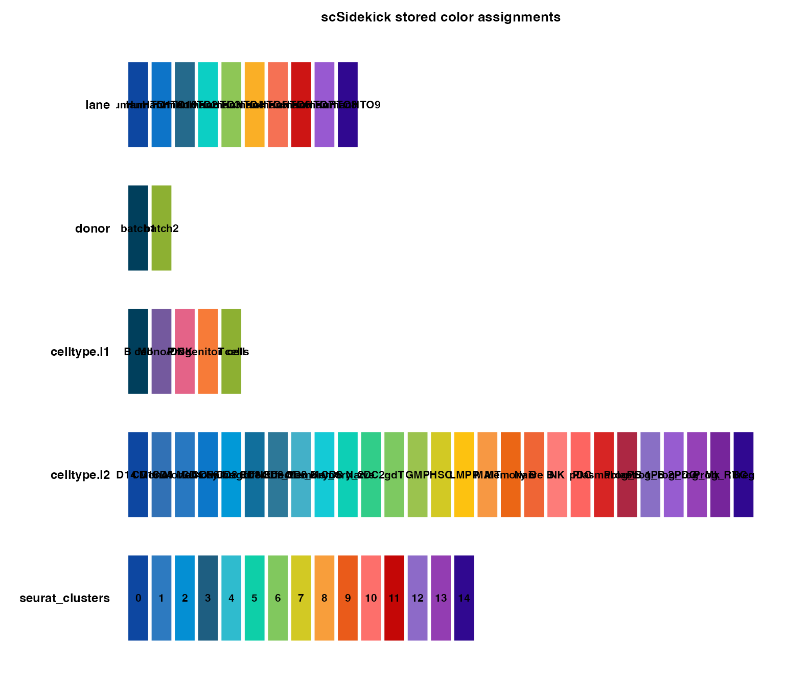
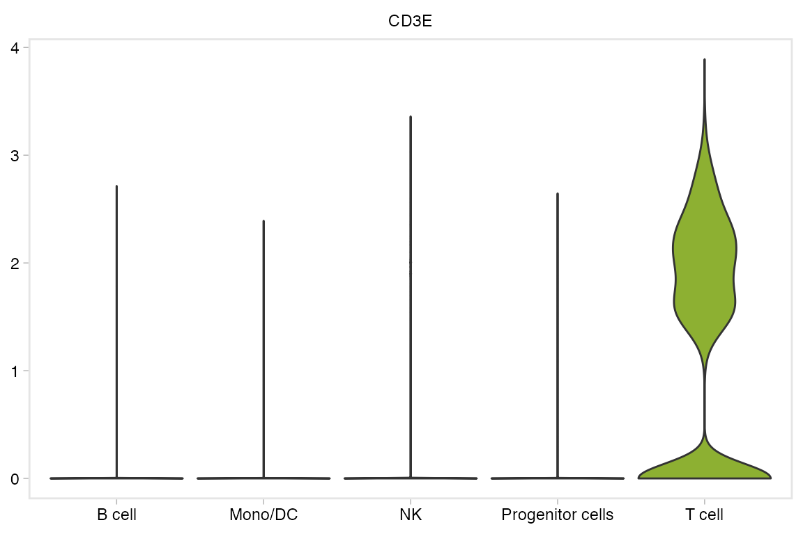
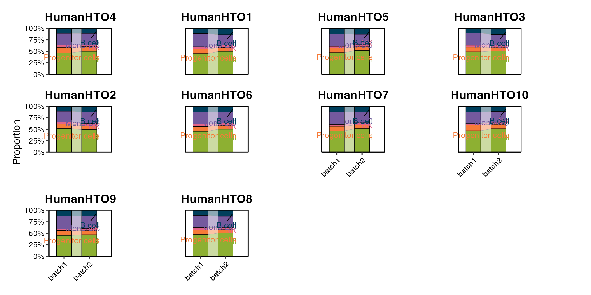
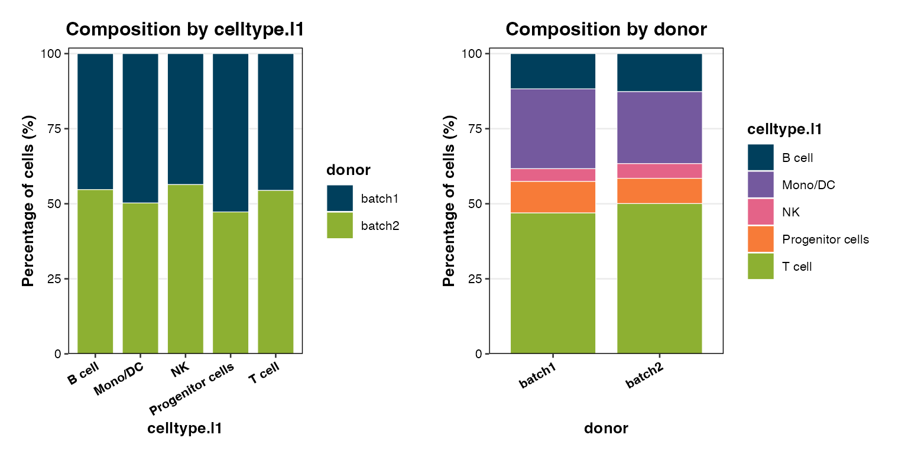

scSidekick — Reporting & Utilities
10_reporting_utilities.RmdOverview
Utility and reporting functions in scSidekick:
-
GetColors()— retrieve a stored color vector by variable name -
ShowColors()— visual swatch grid of all registered palettes -
theme_NourMin()— minimal ggplot2 theme consistent with scSidekick figures -
PlotTrendLabeled()— standalone composition bar chart for manuscripts -
PlotComposition()— composition bar chart without trend direction -
ExtractMethods()— auto-generate a methods paragraph from the Seurat command log -
create_analysis_pptx()— assemble a PowerPoint deck from saved figures
1. GetColors() — retrieve stored colors
GetColors() returns the named color vector for a
variable, ready to pass into scale_color_manual() or any
scSidekick colors argument.
# Single variable
ct_cols <- GetColors(bmcite, "celltype.l1")
ct_cols## B cell Mono/DC NK Progenitor cells
## "#003F5C" "#74599E" "#E46388" "#F77B38"
## T cell
## "#8DB032"## [1] "lane" "donor" "celltype.l1" "celltype.l2"
## [5] "seurat_clusters"2. ShowColors() — visual swatch grid
ShowColors() renders a color tile for every registered
variable and level.
ShowColors(bmcite)
3. theme_NourMin() — minimal ggplot2 theme
theme_NourMin() removes excess chart junk while keeping
axis labels, titles, and a clean panel border. Layer it after any
standard theme_*() call.
VlnPlot(bmcite, features = "CD3E", group.by = "celltype.l1", pt.size = 0) +
theme_NourMin() +
scale_fill_manual(values = GetColors(bmcite, "celltype.l1")) +
theme(legend.position = "none")
4. PlotTrendLabeled() — composition bar chart
PlotTrendLabeled() is a standalone composition figure:
one stacked bar per group.by level within each
split.by panel, with percentage labels on each segment. Use
this for publications; use PlotDimPlots(show_trend=TRUE)
for exploratory talks.
PlotTrendLabeled(bmcite,
stat.by = "celltype.l1",
group.by = "donor",
split.by = "lane",
label.side = "right")
5. PlotComposition() — composition without trend
direction
PlotComposition() shows proportional composition as a
straightforward stacked bar chart without the directional label
emphasis. Good for summarizing multi-sample distributions.
PlotComposition(bmcite,
group.by = "celltype.l1",
split.by = "donor")
6. ExtractMethods() — auto-generate a methods
paragraph
ExtractMethods() reads the Seurat command log
(bmcite@commands) and reconstructs key analysis steps as a
prose paragraph and a structured summary.
methods_out <- ExtractMethods(bmcite, cite_seurat = TRUE)
# Paste into a manuscript
cat(methods_out$methods_text)
# Step-by-step summary (data frame)
print(methods_out$summary)7. Nour_pal() — the built-in palette system
scSidekick ships with Nour18 (18 qualitative colors) and
Nour20 (20-color full-spectrum). Both plug into
Nour_pal().
# Display all 18 colors
scales::show_col(Nour18, cex_label = 0.6)
# Use in a custom ggplot
df <- data.frame(x = 1:8, y = 1, grp = LETTERS[1:8])
ggplot(df, aes(x, y, color = grp)) +
geom_point(size = 6) +
scale_color_manual(values = Nour_pal("main")(8)) +
theme_NourMin()
8. create_analysis_pptx() — auto-assemble a slide
deck
create_analysis_pptx() scans output_dir for
saved PDF/PNG figures from scSidekick functions, groups them into
sections by filename keyword, and writes a .pptx file.
create_analysis_pptx(
output_dir = "./bmcite_Figures",
object_name = "bmcite")Section grouping rules (keyword in filename → section label):
| Keyword | Section |
|---|---|
UMAP, DimPlot
|
Dimensionality Reduction |
Feature, Expression
|
Gene Expression |
Heatmap, Dot
|
Heatmaps & Dot Plots |
Spatial |
Spatial |
GSEA, Pathway
|
Pathway Analysis |
CellChat, Communication
|
Cell-Cell Communication |
Annotation, Assignment
|
Cell Annotation |
| anything else | Miscellaneous |
Include or exclude sections by name:
create_analysis_pptx(
output_dir = "./bmcite_Figures",
object_name = "bmcite",
include_sections = c("Dimensionality Reduction", "Gene Expression"))When to use show_trend vs
PlotTrendLabeled
PlotDimPlots(show_trend=TRUE) |
PlotTrendLabeled() |
|
|---|---|---|
| Primary figure | UMAP scatter | Bar chart |
| Trend panel | Appended right of UMAPs | Standalone |
| Labels | None by default | Percentage labels |
| Best for | Talks, exploratory | Manuscripts |
See also
- Vignette 01:
PrepObject,ShowColors,GetColors— color management - Vignette 03:
PlotDimPlots— UMAP with optional trend panel - All other vignettes save to
output_dir, which feeds intocreate_analysis_pptx
Session info
## R version 4.3.1 (2023-06-16)
## Platform: aarch64-apple-darwin20 (64-bit)
## Running under: macOS 15.6
##
## Matrix products: default
## BLAS: /Library/Frameworks/R.framework/Versions/4.3-arm64/Resources/lib/libRblas.0.dylib
## LAPACK: /Library/Frameworks/R.framework/Versions/4.3-arm64/Resources/lib/libRlapack.dylib; LAPACK version 3.11.0
##
## locale:
## [1] en_US.UTF-8/en_US.UTF-8/en_US.UTF-8/C/en_US.UTF-8/en_US.UTF-8
##
## time zone: America/Chicago
## tzcode source: internal
##
## attached base packages:
## [1] stats graphics grDevices utils datasets methods base
##
## other attached packages:
## [1] ggplot2_3.5.2 dplyr_1.1.4
## [3] stxBrain.SeuratData_0.1.2 pbmc3k.SeuratData_3.1.4
## [5] bmcite.SeuratData_0.3.0 SeuratData_0.2.2
## [7] Seurat_5.2.1 SeuratObject_5.1.0
## [9] sp_2.1-3 scSidekick_0.1.0
##
## loaded via a namespace (and not attached):
## [1] RColorBrewer_1.1-3 rstudioapi_0.16.0 jsonlite_2.0.0
## [4] magrittr_2.0.3 ggbeeswarm_0.7.2 spatstat.utils_3.1-0
## [7] farver_2.1.2 rmarkdown_2.29 fs_1.6.6
## [10] ragg_1.4.0 vctrs_0.6.5 ROCR_1.0-11
## [13] spatstat.explore_3.2-7 htmltools_0.5.8.1 sass_0.4.10
## [16] sctransform_0.4.1 parallelly_1.37.1 KernSmooth_2.23-22
## [19] bslib_0.9.0 htmlwidgets_1.6.4 desc_1.4.3
## [22] ica_1.0-3 plyr_1.8.9 plotly_4.10.4
## [25] zoo_1.8-14 cachem_1.1.0 igraph_2.0.3
## [28] mime_0.13 lifecycle_1.0.4 pkgconfig_2.0.3
## [31] Matrix_1.6-5 R6_2.6.1 fastmap_1.2.0
## [34] fitdistrplus_1.1-11 future_1.33.2 shiny_1.11.1
## [37] digest_0.6.37 colorspace_2.1-1 patchwork_1.3.1
## [40] tensor_1.5 RSpectra_0.16-1 irlba_2.3.5.1
## [43] textshaping_0.3.7 labeling_0.4.3 progressr_0.14.0
## [46] spatstat.sparse_3.0-3 httr_1.4.7 polyclip_1.10-6
## [49] abind_1.4-8 compiler_4.3.1 withr_3.0.2
## [52] fastDummies_1.7.3 highr_0.10 MASS_7.3-60.0.1
## [55] rappdirs_0.3.3 tools_4.3.1 vipor_0.4.7
## [58] lmtest_0.9-40 otel_0.2.0 beeswarm_0.4.0
## [61] httpuv_1.6.16 future.apply_1.11.2 goftest_1.2-3
## [64] glue_1.8.0 nlme_3.1-164 promises_1.5.0
## [67] grid_4.3.1 Rtsne_0.17 cluster_2.1.6
## [70] reshape2_1.4.4 generics_0.1.4 gtable_0.3.6
## [73] spatstat.data_3.0-4 tidyr_1.3.1 data.table_1.15.4
## [76] spatstat.geom_3.2-9 RcppAnnoy_0.0.22 ggrepel_0.9.6
## [79] RANN_2.6.1 pillar_1.11.0 stringr_1.5.1
## [82] spam_2.10-0 RcppHNSW_0.6.0 later_1.4.2
## [85] splines_4.3.1 lattice_0.22-6 survival_3.5-8
## [88] deldir_2.0-4 tidyselect_1.2.1 miniUI_0.1.1.1
## [91] pbapply_1.7-2 knitr_1.45 gridExtra_2.3
## [94] scattermore_1.2 xfun_0.52 matrixStats_1.2.0
## [97] stringi_1.8.7 lazyeval_0.2.2 yaml_2.3.10
## [100] evaluate_0.23 codetools_0.2-20 tibble_3.3.0
## [103] cli_3.6.5 uwot_0.1.16 xtable_1.8-4
## [106] reticulate_1.35.0 systemfonts_1.0.6 jquerylib_0.1.4
## [109] dichromat_2.0-0.1 Rcpp_1.1.0 globals_0.16.3
## [112] spatstat.random_3.2-3 png_0.1-8 ggrastr_1.0.2
## [115] parallel_4.3.1 pkgdown_2.1.3 dotCall64_1.1-1
## [118] listenv_0.9.1 viridisLite_0.4.2 scales_1.4.0
## [121] ggridges_0.5.6 purrr_1.0.4 crayon_1.5.2
## [124] rlang_1.1.6 cowplot_1.2.0.9000